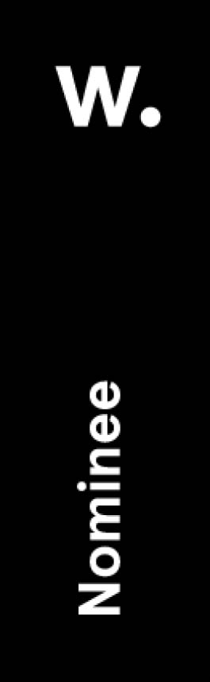
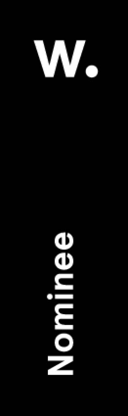

Off The Grid
This data visualization project aims to map the world of alternative social media today. It consists of a website and a book illustrating the results of the data analysis. The social media landscape is much broader than one can imagine.
Research
The research method developed to investigate the issue consisted firstly in query search on google, app store, and google play (basic list of social media was obtained); the list was then entered on "alternative to" to derive the corresponding alternative platforms. (Inactive platforms were excluded)
The focus of the analysis was on the self-descriptions of social media: the claims were qualitatively analyzed to bring out the most recurring narrative themes. Teamwork was essential: different points of view for a deeper analysis.
Words do have different shades;
they are the core of the project.
Approach
The results of the research tell the story of today's world of social media, in order to communicate them we opted for two artifacts: a book and and a website. The artifacts are based on the 3 research protocols developed, shown below:
The Book
We developed the book into 3 sections, corresponding to the 3 research protocols. The user plays an active role in exploring the interactive book, choosing the order in which to investigate the sections.


The Website
Secondly, we built the website with code with the goal of making the social media landscape explorable from multiple perspectives. The website is composed by a digital atlas, an ecosystem map and a section with the themes extracted from claims.
Do you care about personal data management in social media?
The website wireframes below show the different sections of the site. It is possible to filter the social media basing on the themes present in their claims.
The network, in the ecosystem section of the website, shows the connections between the social media and the themes related.

There are in-depth reviews for each theme, with a collection of all the words used in the claims to refer to that theme.
We are happy and honoured that Off The Grid has received some awards: silver award at the European Design Awards 2023 student category, honorable mention at the Awwwards 2022, and inclusion in the Information is Beautiful Awards 2022 longlist.
Team: C. De Amicis, L. Agosta, A. Antonini Cencicchio, F. Lucifora, M. Bombardieri, E. Busletta.